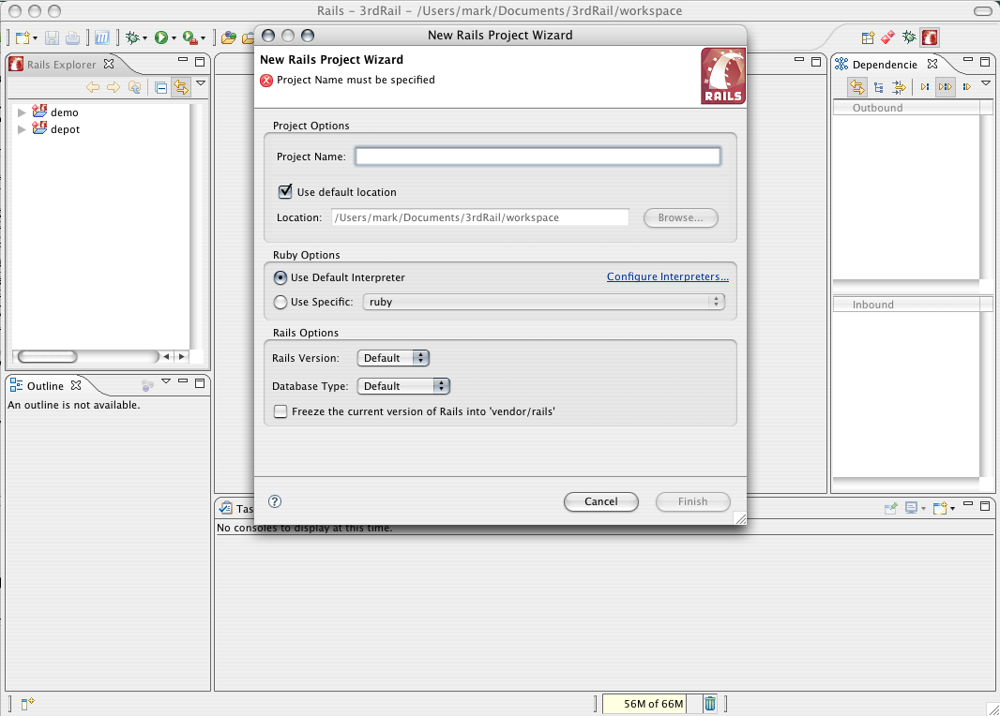

Quick Start: a New Rails Project
For a Hello World blog tutorial, see this video:
Creating a New Rails Project.
If you are not familiar with the Eclipse framework, see:
the Workbench tutorials.
To create a new Rails project:
-
If you have not already done so,
configure the Ruby interpreter.
-
By default 3rdRail opens in the Rails Perspective, as you can see by the window title
If for some reason you are not already using it, switch to the Rails Perspective.
-
Open the
New Rails Project Wizard

-
The opens:

The only thing you have to do is to name the project.
All relevant project defaults are set up for you.
A default database is set up, as is the WEBrick application server.
If you would like to change any of the defaults you can use the pulldown menus.
See dynamic help from within the wizard for more information.
-
Click .
The
opens in the console area
at the bottom of the IDE and shows details about the project.
For more information, see this video:
The Project Commander and Rails Console.
CodeGear Commanders
Creating a New Rails Project
Writing Ruby on Rails Applications
 CodeGear brand
and product names are service marks, trademarks or registered trademarks of Borland Software
Corporation in the United States and other countries.
CodeGear brand
and product names are service marks, trademarks or registered trademarks of Borland Software
Corporation in the United States and other countries.